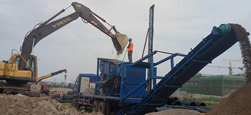

- Project Case
- Zenith Concrete Crushing Plant in Brunei
- Zenith Stone Crusher in Angola
- Manufacturing Sand From Rocks With B-VSI-7611 in UAE
- Zenith Screening Plant in Palestine
- Mexico 120-150tph Stone Production Line
- Peru 60-80 tph Stone Production Line
- Australia 150tph Stone Crushing and Screening Plant
- A Very Successful 200-250tph Crushing Plant in Kenya
- Kenya 30-40 TPH Stone Production Line
- Kenya 100 TPH Mobile Stone Production Line
- Crushing Plant in Ghana from Zenith 400-450tph
- Oman 200 TPH Stone Production Line
- Zenith Portable Limestone Crushing Line
- Zenith 300TPH Complete Crushing Line in Jummum, KSA
- Zenith XZM Ultrafine Mill in INDIA
- Limestone Grinding Plant in Belgium
- XZM221 Ultrafine Mill in Egypt
- Grinding Plant in Mexico
- Grinding Plant in Thailand
- Zenith 100-120tph Stationary Crushing Line in Addis Ababa
- Zenith 100-120 T/H Mobile Crushing Line in Nairobi
- Zenith 100-120tph Stationary Crushing Line in Kenya
- Tanzania 100-120 TPH Stone Production Line
- Zenith Cone Crusher Line In Indonesia
- Malaysia 300TPH Impact Crushing Plant
- Zenith 300 TPH Stone Production Line in Suhar-Liwa, Oman
- Zenith Stationary Basalt Crushing Line In Jeddah
- Aggregate Plant
- Mineral Plant
- Artificial Sand Making Plant
- Construction Waste Recycling Plant
What should the Portable crusher plant be used for the first time?
What should the Portable crusher plant be used for the first time?

Portable crusher plant equipment is not idle for a long time in the humid air will rust, do not use when doing the maintenance work, must be used before the full inspection and maintenance, should first run for a period of time to ensure that the equipment Safe and normal operation. Do not overload operation, overload operation will accelerate the reduction of Portable crusher plant life, should be in strict accordance with the operating instructions to correctly operate Portable crusher plant, and regular maintenance.
First, the review of the fixed machine screws can loose, bearing the foundation of the machine can be too soft.
Second, the review of Portable crusher plant crushing chamber which can have foreign body, including the last processing left in the cavity of the material, a variety of production tools, wire, iron and so on.
Third, the review of Portable crusher plant safe way perfect.
Fourth, the review of the machine's bearings and other places need to smooth smooth smooth, thin oil station in the smooth agent can be short.
The Portable crusher plant is a machine that is often used when crushing stone, but if it is not prepared before using a Portable crusher plant, it will affect the production and will cause damage to the Portable crusher plant when serious , Causing serious security incidents. Therefore, in the use of the necessary preparatory tasks, to a certain level in the machine to reduce the chance of failure, these so-called problems can be solved!
Portable crusher plant daily maintenance small details
- 1, pay attention to the maintenance of the bearing; especially in the Portable crusher plant bearing maintenance work, the injection of lubricating oil must be a good seal of the plot of lubricants; Moreover, due to Portable crusher plant main crushing equipment is generally used Jaw crusher, anti-break and conical broken, it is recommended that manufacturers use forced lubrication system to prevent the rotation of bearings, roller bearings and all the racing rust. Note: Portable crusher plants require oil-filled bearings that include: rotating bearings, roller bearings and all gears.
- 2, pay attention to check the work of the machine is normal; whether the loose tire; rotating gear in the running there is no impact and so on.
- 3, to always pay attention to replace the Portable crusher plant parts are worn to prevent the machine to bring greater damage, and then, usually should also pay attention to check the parts of the wear and tear.
- 4, should pay attention to keep the Portable crusher plant host, parts of the clean, to avoid dust, dust and other damage to the machine.
In addition, in addition to the above attention to the small details, the maintenance of Portable crusher plant maintenance is not working independently, but also often with the mechanical operation of cooperation, some parts of the maintenance and maintenance also related to the professional knowledge of Portable crusher plant. Therefore, maintenance and maintenance of Portable crusher plant when not only to arrange regular staff check, but also to arrange the full-time staff with maintenance and conservation of professional knowledge and professional skills.


Request a quotation
CONTACT US
0086-21-58386256
86-21-58383028
info@crusherproduct.net
SERVICE ONLINE >